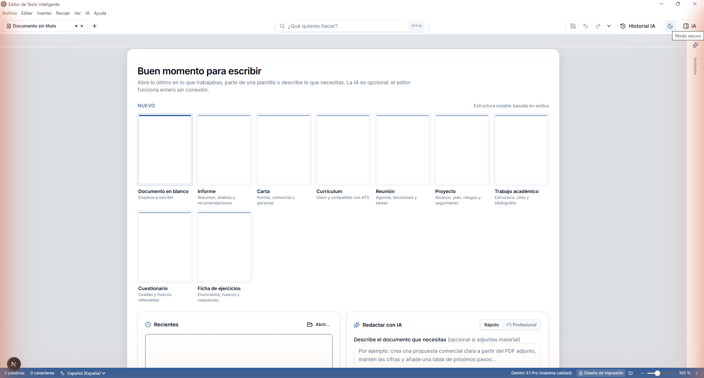
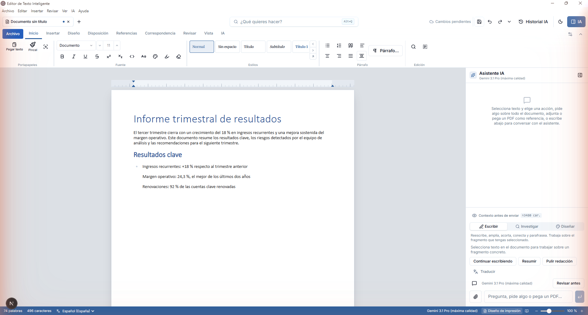
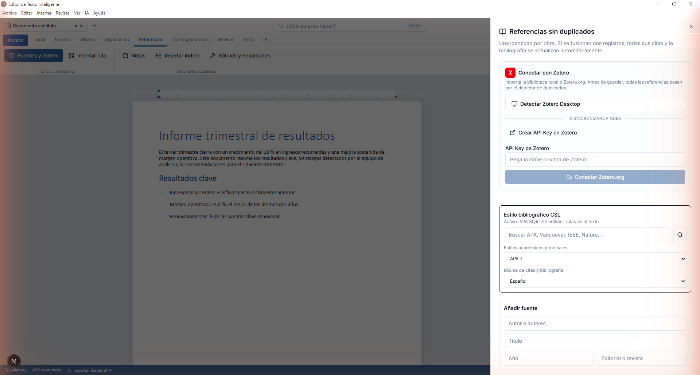

Docenas de funciones profesionales al estilo Word, compatibilidad real con muchísimos formatos, y un asistente de IA que no se limita a escribir: también investiga con fuentes y diseña la maquetación de tu documento, siempre con tu confirmación.



Capturas reales de la aplicación en Windows 11, sin recortar ni retocar. Iremos ampliando esta galería a medida que la interfaz evolucione. Pulsa cualquiera para verla en grande.
Empieza sin configurar nada o afina cada parámetro del modelo de IA. Puedes cambiar de modo en cualquier momento sin perder el enunciado ni los archivos adjuntos.
Pensado para quien quiere un borrador ya.
El mismo enunciado y los mismos archivos, con más control:
El panel del asistente tiene tres modos independientes. Puedes usarlos por separado o combinarlos en el mismo documento.
Genera texto nuevo o transforma el que ya tienes.
La IA sale del documento cuando se lo pides, no antes.
Acciones nativas revisables, nunca automáticas.
Con la familiaridad de Word, compatibilidad con muchísimos formatos y funciones pensadas para trabajos académicos, informes y documentos largos.
Abre, edita y exporta DOCX, PDF y OpenDocument conservando estilos, notas, campos, tablas e imágenes.
Redacta, reescribe, resume, traduce e investiga con fuentes. Ve la vista previa antes de aplicar cualquier cambio.
Pestañas, orden y grupos configurables con la organización familiar de Word, KeyTips incluidas.
Sincroniza Zotero Desktop o Zotero.org, más de 10.000 estilos CSL y fusión de duplicados campo a campo.
Comentarios, respuestas, seguimiento de cambios y comparación estructural entre versiones o formatos.
Estilos de tabla, ordenación por columna y fórmulas SUM, AVERAGE, COUNT, MIN y MAX exportables a Word y ODT.
LaTeX renderizado con KaTeX, exportado como OMML editable en Word, y galería buscable de símbolos.
Combina un CSV/TSV local con tu plantilla y genera los documentos por intervalos en una pestaña nueva.
Historial de versiones, detección de cambios externos y copia de seguridad antes de sobrescribir.
Autocorrección configurable y tesauros completos de español e inglés, con sustitución en un clic.
Índice dinámico, numeración multinivel, secciones con preliminares romanos y marcadores con referencias cruzadas.
Compara secuencialmente DOCX, PDF, HTML, Markdown o texto y adopta la versión que prefieras.
No pretendemos sustituir Word en todo. Estas son las diferencias concretas que sí importan si escribes con ayuda de IA.
| Criterio | Juord | Word + Microsoft 365 |
|---|---|---|
| Precio | Gratis, sin suscripción | Requiere suscripción de Microsoft 365 |
| Asistente de IA | Incluido desde el primer día, sin coste añadido | Copilot se contrata aparte, como complemento de pago |
| Motor de IA | Eliges el modelo: Gemini con tu clave u OpenRouter gratis | Motor cerrado, sin alternativa ni control del modelo |
| Dónde vive tu clave y tus datos | Tu API key y tus documentos, solo en tu equipo | Actividad y documentos ligados a tu cuenta y la nube de Microsoft |
| Citas y Zotero | Integración nativa, sin instalar nada más | Necesita el complemento oficial de Zotero aparte |
| Funciona sin conexión | Editor, maquetación y exportación 100 % offline | Necesita activación y cuenta con conexión periódica |
| Código | Abierto: puedes auditarlo en GitHub | Propietario y cerrado |
| Acciones de la IA sobre tu documento | Se muestran como propuesta y solo se aplican si las confirmas | Varía según el complemento y la versión |
Word sigue siendo el estándar en muchas oficinas y es la opción correcta si ya pagas Microsoft 365 y no necesitas IA. Juord tiene sentido si quieres compatibilidad real con DOCX sin pagar una suscripción, y si prefieres decidir tú qué modelo de IA usa tu documento y dónde vive tu clave.
Elige un proveedor. Los dos tienen un nivel gratuito y no piden tarjeta de crédito para empezar. Tardas menos de dos minutos.
Recomendado: el modelo con más calidad para documentos largos.
AIza…).Alternativa sin depender de una cuenta de Google, con modelos :free.
sk-or-…).:free y bloquea los de pago.La clave se guarda cifrada en el perfil local de la aplicación, nunca dentro de los documentos ni en ningún servidor propio. Puedes eliminarla en cualquier momento desde Ajustes. Zotero también admite una API key opcional propia: se explica paso a paso en la guía de uso.
Disponible para Windows 10/11 de 64 bits. Elige instalador si quieres accesos directos y actualizaciones sencillas, o portable si prefieres ejecutarlo sin instalar.
Nota sobre SmartScreen: la aplicación no está firmada digitalmente todavía, así que Windows puede mostrar un aviso de «Editor desconocido» la primera vez. Pulsa Más información → Ejecutar de todas formas para continuar. Puedes ver todas las versiones publicadas en la página de releases de GitHub. Los nombres de los archivos todavía incluyen «Editor Inteligente IA», el nombre técnico anterior del proyecto; el producto ya se llama Juord.
Sí. La aplicación es gratuita. La IA usa tu propia API key de Gemini (con cuota gratuita en Google AI Studio) o el enrutador gratuito de OpenRouter, así que no pagas nada a través de la app.
Solo si quieres usar el asistente de IA. El editor, la maquetación, la exportación DOCX/PDF/ODT y Zotero funcionan sin ninguna clave ni conexión a internet.
En Google AI Studio para Gemini o en OpenRouter para el enrutador gratuito. El paso a paso con capturas está en la sección Cómo conseguir tu API key gratis de esta misma página.
El instalador crea accesos directos y facilita futuras actualizaciones. El portable es un único .exe que puedes ejecutar desde cualquier carpeta o memoria USB, sin instalación.
Por ahora la distribución empaquetada solo está disponible para Windows. El código es abierto, así que puedes revisarlo en el repositorio de GitHub.
No. Las claves se guardan en tu perfil local y los documentos se editan en tu equipo. Las peticiones de IA van directamente al proveedor que elijas (Google o OpenRouter).
Instálalo en un minuto y empieza a escribir con ayuda de la IA, a tu ritmo.